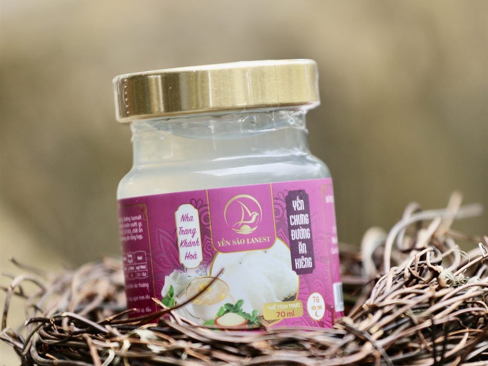
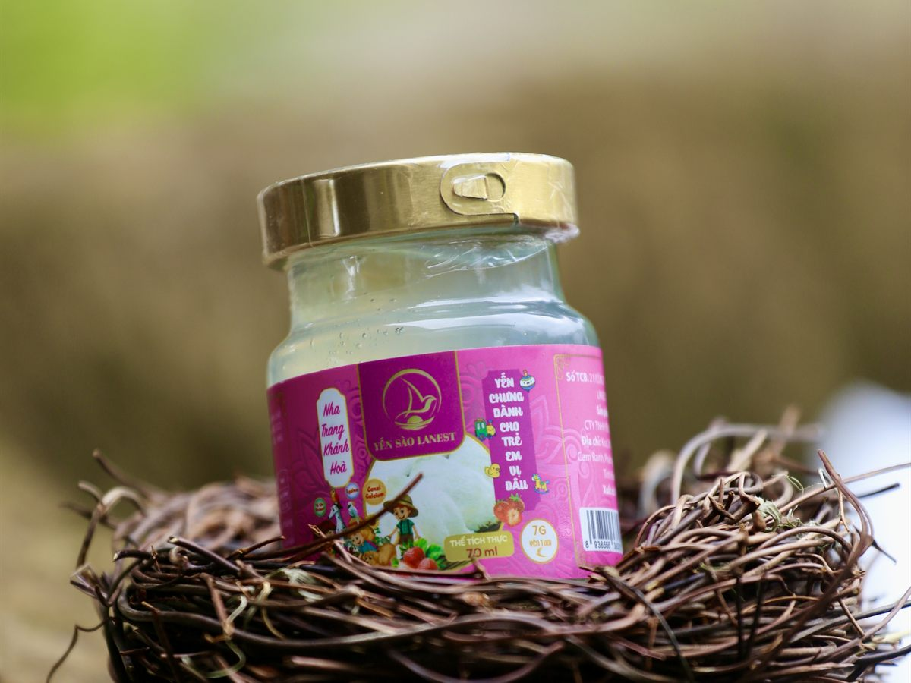

Ai Không Nên Ăn Yến? Những Lưu Ý Khi Dùng Yến Sào
Yến Sào Lanest · Đăng ngày 10/11/2026

Yến sào là thực phẩm bồi bổ, nhưng không phải ai cũng dùng giống nhau. Câu hỏi ai không nên ăn yến có câu trả lời ngắn hơn nhiều người nghĩ: trong tài liệu của Lanest, chỉ một nhóm được ghi rõ là chưa nên dùng. Vài nhóm khác vẫn dùng được nhưng cần hỏi bác sĩ hoặc chỉnh cách dùng. Và có những lúc không nên ăn chén yến hay hũ yến đang cầm trên tay. Bài này gom đủ ba phần đó.
Hũ yến chưng đường ăn kiêng: vị dùng đường isomalt thay đường phèn
1. Trẻ dưới 12 tháng tuổi: chưa nên dùng
Đây là nhóm duy nhất tài liệu của Lanest ghi rõ: trẻ từ 12 tháng tuổi trở lên mới nên dùng yến. Hai vị yến hũ dành cho trẻ của Lanest cũng ghi đối tượng "trẻ em từ 1 tuổi trở lên".
Khi bé đã qua 1 tuổi, lượng dùng cũng nhỏ hơn người lớn nhiều. Theo hướng dẫn của Lanest, trẻ 1–3 tuổi chỉ dùng 1–2 lần mỗi tuần, mỗi lần 2–3g yến khô. Hũ yến của bố mẹ là để bố mẹ dùng; đừng cho bé dưới 12 tháng "nếm thử một muỗng". Chi tiết cho từng độ tuổi có trong bài yến sào cho trẻ em.

Hũ yến chưng dành cho trẻ em vị dâu, tài liệu sản phẩm ghi dành cho trẻ từ 1 tuổi trở lên
2. Người đang điều trị bệnh hoặc đang dùng thuốc: hỏi bác sĩ trước
Mọi tài liệu mô tả sản phẩm của Lanest đều kèm một câu: sản phẩm không phải là thuốc và không có tác dụng thay thế thuốc chữa bệnh. Các vị yến chỉ ghi ở mức "hỗ trợ".
Vì vậy người đang điều trị bệnh, đang dùng thuốc dài ngày, hay vừa phẫu thuật, nên hỏi bác sĩ đang theo dõi mình trước khi dùng yến đều đặn. Không bỏ thuốc hay giảm thuốc để thay bằng yến. Khi đi khám, mang theo hũ yến hoặc chụp nhãn thành phần, bác sĩ sẽ dễ tư vấn hơn, nhất là với các vị có thêm nhân sâm, đông trùng hạ thảo, saffron hay gừng.
3. Người cần hạn chế đường: chỉnh lượng đường, không nhất thiết bỏ yến
Yến chưng thường được nêm thêm đường, và đây là phần người cần hạn chế đường phải để ý. Ví dụ hũ yến chưng đường phèn 7g của Lanest có 8g đường phèn, và hầu hết các vị 7g khác cũng dùng đường phèn làm vị ngọt nền.
- Tự chưng tại nhà: cẩm nang của Lanest ghi người tiểu đường có thể giảm hoặc không cho đường phèn.
- Dùng yến hũ: Lanest có hai vị dùng đường isomalt thay đường phèn là yến chưng đường ăn kiêng và đông trùng hạ thảo ăn kiêng. Tài liệu sản phẩm ghi đối tượng của hai vị này là người ăn kiêng, người kiểm soát đường huyết, người lớn tuổi.
Dù chọn cách nào, người đang điều trị tiểu đường vẫn nên hỏi bác sĩ về lượng dùng. Bài yến sào cho người tiểu đường phân tích kỹ hơn.
4. Phụ nữ mang thai: dùng được, nhưng hỏi bác sĩ sản khoa
Cẩm nang tổng quan của Lanest xếp phụ nữ mang thai vào nhóm nên dùng yến. Tuy vậy, Lanest chưa có mốc lượng dùng riêng cho từng giai đoạn thai kỳ. Mỗi thai kỳ một khác, nên mẹ bầu hãy hỏi bác sĩ sản khoa trước, nhất là khi đang bị tiểu đường thai kỳ hoặc đang dùng thuốc. Đọc thêm bài yến sào cho bà bầu.
5. Người có cơ địa dị ứng: đọc kỹ nhãn trước khi dùng
Người từng dị ứng với một loại thực phẩm hay phụ gia nào thì nên đọc nhãn trước, vì mỗi dòng yến hũ có thành phần khác nhau:
| Dòng sản phẩm | Thành phần ghi trên nhãn |
| Yến hũ 7g yến tươi | Nước, yến tươi 7g, đường phèn (hoặc isomalt ở 2 vị ăn kiêng), nguyên liệu theo vị, collagen thủy phân, chất xơ inulin, chất điều chỉnh độ acid, chất ổn định, hương yến tổng hợp. Vị trẻ em không có collagen; vị dâu dùng hương dâu tổng hợp. |
| Yến hũ nguyên chất 100% | Nước tinh khiết, 1,5g tổ yến (15g yến tươi), đường phèn, cộng nguyên liệu theo vị (đông trùng hạ thảo hoặc gừng). |
| Yến tinh chế | 100% tổ yến. |
Lần đầu dùng mà thấy cơ thể có biểu hiện bất thường thì ngừng lại và hỏi bác sĩ.
6. Những lúc không nên ăn chén yến hay hũ yến đó
Đôi khi vấn đề không nằm ở người ăn mà ở chính món yến. Nhãn yến hũ Lanest in rõ: "Không sử dụng sản phẩm khi thấy có dấu hiệu lạ." Bỏ đi khi gặp các trường hợp sau:
- Hũ đã quá hạn sử dụng in trên bao bì, nắp hở, hũ nứt hoặc rò rỉ trước khi mở.
- Mở ra thấy mùi, vị, màu khác hẳn mọi lần.
- Yến tự chưng đã để quá 1–2 ngày trong ngăn mát.
- Tổ yến khô chuyển sang vàng đậm hoặc đỏ. Theo kinh nghiệm của người sáng lập Lanest, màu kem hay cam vàng nhạt là tự nhiên, còn vàng đậm, đỏ là dấu hiệu yến bị nhiễm.
Cách cất hũ đúng để tránh hỏng có trong bài bảo quản yến hũ chưng sẵn.
7. Lưu ý chung cho người khỏe mạnh
Cẩm nang của Lanest mở đầu bằng câu hỏi "Càng ăn nhiều yến càng bổ?" và trả lời: yến không phải "thần dược tức thì", chỉ có ích khi dùng đúng. Với người lớn khỏe mạnh:
- Đúng lượng: mỗi lần 5–10g yến khô, bắt đầu từ 2–3 lần mỗi tuần, nhiều nhất 3–5 lần.
- Đúng lúc: không ăn ngay sau bữa chính; dùng khi bụng nhẹ, buổi tối trước ngủ khoảng một tiếng hoặc sáng sớm.
- Đúng cách nấu: chưng cách thủy lửa nhỏ, không đun sôi trực tiếp, không chưng quá lâu.
- Đều đặn: dùng đều thay vì ăn dồn dập vài hôm rồi bỏ ngang.
Câu hỏi thường gặp
Ăn yến nhiều có tốt hơn không?
Không. Hướng dẫn của Lanest giới hạn người lớn tối đa 3–5 lần mỗi tuần, mỗi lần 5–10g yến khô. Ăn nhiều hơn không làm yến "bổ" hơn.
Trẻ mấy tháng thì ăn được yến?
Từ 12 tháng tuổi trở lên. Trẻ 1–3 tuổi dùng 1–2 lần mỗi tuần, mỗi lần 2–3g.
Người tiểu đường có uống yến hũ được không?
Nên hỏi bác sĩ trước. Nếu được bác sĩ đồng ý, có thể chọn vị dùng đường isomalt thay đường phèn, hoặc tự chưng yến ít đường hay không đường.